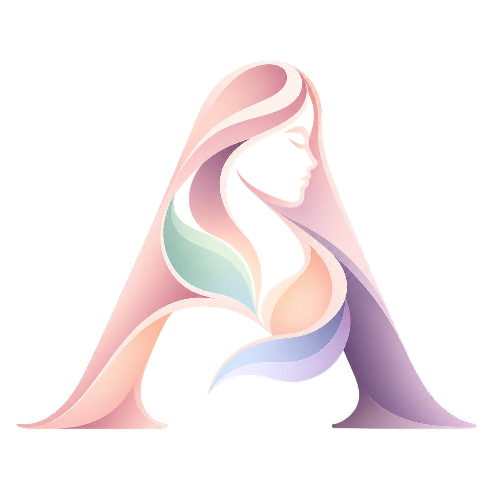

A PAGE JUST FOR YOULet it out.
Let it out.
Leave a little lighter.
A sentence, a feeling, a thought. Your journal doesn't need a perfect beginning.
Open your journal tools
AuraCare.IN YOUR OWN RHYTHM
A little closer to your body.
A little kinder to your mind.
Care for every version of you.
Thoughtful tools. Gentle guidance. Your pace.
SMALL MOMENTS. REAL CONNECTION.
A few simple ways to make space for yourself.
A sentence, a feeling, a thought. Your journal doesn't need a perfect beginning.
Open your journal toolsBring your mood, energy, and cycle notes together. A little curiosity is a good place to start.
Explore your cycleYou can take a moment without earning it. Try a short guided pause, at your own pace.
Take a breathCare idea 1 of 3
Different pieces of your life, thoughtfully brought together.
Your cycle, symptoms, and energy.
A clearer picture of your own patterns.
Breathing, reflection, and room
for everything you're feeling.
A gentle space for reflection.
Pattern-based guidance, never a diagnosis.
Keep health records and visit notes in one place.
There's no one way to move through life.
Find support for the chapter you're in.
A MOMENT THAT'S ONLY YOURS
Nothing to complete. Nothing to prove.
Just a gentle moment to come back to yourself.
Breathe naturally, at your own pace. In for four, out for four, if comfortable.
More mindful momentsYOUR OWN STARTING POINT
Choose a chapter, then a focus. We'll point you to the tools that fit.
Your activity in this page session, not community statistics.
Your tracker entries are stored in this browser on this device. Others with access to the same browser may see them. You choose what to share with your clinician.
AuraCare helps you notice patterns and organise questions. It never diagnoses or replaces professional care. The current assistant uses scripted replies.
Explore cycle tracking, PCOS insights, teen, pregnancy and menopause support, mental wellness, nutrition, fitness, health records, doctor summaries, and emergency support.